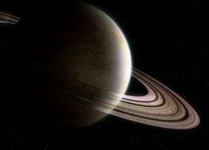

Saturn is the sixth planet from the sun and the second largest planet in our solar system. Adorned with thousands of beautiful ringlets, Saturn is unique among the planets. It is not the only planet to have rings—made of chunks of ice and rock—but none are as spectacular or as complicated as Saturn's. Like fellow gas giant Jupiter, Saturn is a massive ball made mostly of hydrogen and helium.
Surrounded by 53 confirmed and nine provisional moons, Saturn is home to some of the most fascinating landscapes in our solar system. From the jets of Enceladus to the methane lakes on smoggy Titan, the Saturn system is a rich source of scientific discovery and still holds many mysteries.